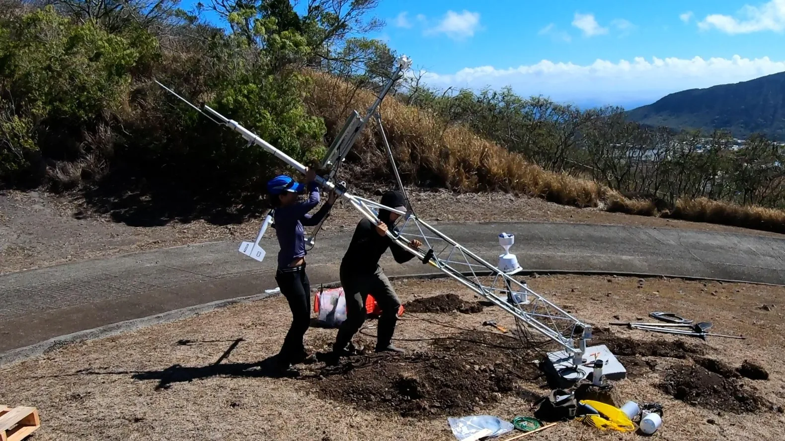

Honolulu, Oʻahu · Full-time
Hawaiʻi Mesonet
Field Technician
For the mechanically minded problem-solver who loves getting instruments working in the real world. Install, repair and maintain research-grade weather stations across the Hawaiian Islands.
Explore this role